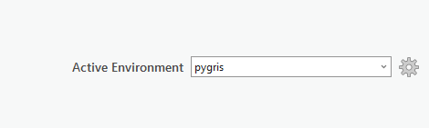

Using your favorite Python packages in ArcGIS Pro
Last week, I gave a workshop on working with geographic data in Python with the University of Michigan’s Social Science Data Analysis Network. The workshop focused on pygris, my new Python package for working with US Census Bureau geographic data resources. I was asked by multiple attendees if pygris works within ArcGIS Pro Python notebooks. I did not know the answer at the time, but it seemed like pygris - and other geospatial data packages in Python - combined with ArcGIS Pro could be quite powerful. I tested this process out, and it turns out that pygris and ArcGIS Pro work quite well together! Read on for a tutorial for how to use pygris (and your other favorite Python packages) in ArcGIS Pro.
This post was tested on ArcGIS Pro version 3.1.
Setting up a new conda environment
ArcGIS Pro ships with conda, a popular package manager for scientific Python. The default conda environment used by ArcGIs Pro is called arcgispro-py3, which has many of the most popular Python libraries for scientific computing and all the Python libraries needed for ArcGIS Pro installed. While this handles many use-cases within ArcGIS Pro, you can’t install new packages into this environment outside of an approved list. This means that you wouldn’t be able to use newer packages like pygris without first creating a new environment.
We’ll want our new environment to include all of the packages already found in arcgispro-py3, so we’ll need to clone it. You’ll want to click the Start icon in Windows then click “All apps”. Navigate to “ArcGIS” and select the Python command prompt.
From the command prompt, enter the following command:
conda create --name YOUR_ENV_NAME --clone arcgispro-py3where YOUR_ENV_NAME is the chosen name of your new environment. I’m calling my environment pygris, as I want to use it with the pygris package. After the environment is set up, you can install packages into it using conda or pip. As pygris is not yet available on conda, we install it with the following command:
pip install pygrisThis will install pygris into your new conda environment along with all required dependencies.
Using your new environment in ArcGIS Pro
To use your new environment in ArcGIS Pro, you’ll first need to activate it - but not from the command line. Launch ArcGIS Pro and click Settings > Package Manager. In the upper-right corner of your screen, change the active environment to your new conda environment, e.g. “pygris”.

Launch a new project (mine is called pygris-blog), then launch a new ArcGIS Python Notebook by clicking Insert > New Notebook. I’ve organized my panes from left to right to show Contents, Notebook, Map, then Catalog.
You should now be able to start using pygris and any other of your favorite Python packages (that are installed) in ArcGIS just as you would in a regular Jupyter notebook. I’m running the following code from last week’s workshop to grab 2017-2021 ACS data on the percent of the population age 25+ with a bachelor’s degree for New York City and erasing water area from Census tracts obtained with pygris.
from pygris import tracts
from pygris.utils import erase_water
from pygris.data import get_census
nyc_counties = ["New York", "Bronx", "Richmond",
"Kings", "Queens"]
nyc_tracts = tracts(state = "NY", county = nyc_counties,
year = 2021, cache = True)
ny_college = get_census(dataset = "acs/acs5/profile",
variables = "DP02_0068PE",
year = 2021,
params = {
"for": "tract:*",
"in": "state:36"},
guess_dtypes = True,
return_geoid = True)
nyc_merged = nyc_tracts.merge(ny_college, how = "inner", on = "GEOID")
nyc_erase = erase_water(nyc_merged, area_threshold = 0.9)Mapping Python-generated data with ArcGIS
In a typical Python workflow, we might map our data with the .plot() method. We can do this directly in the notebook within ArcGIS Pro (note that we need %matplotlib inline and to use plt.show() to get this to work in an ArcGIS notebook). A major reason for linking pygris with ArcGIS Pro, however, is to gain access to ArcGIS Pro’s rich cartographic functionality. This will require a couple extra steps.
We’ll need to use the GeoAccessor class, which lives inside the ArcGIS API for Python. GeoAccessor allows us to interact with Pandas DataFrames and GeoPandas GeoDataFrames like our New York City object. Note that this was buggy prior to ArcGIS for Python version 2.0.1, so you’ll need to update the package if you have an older version.
from arcgis.features import GeoAccessor
nyc_proj = nyc_erase.to_crs(6538)
nyc_arcgis = GeoAccessor.from_geodataframe(nyc_proj, column_name = "geometry")The object nyc_arcgis is now a “spatially enabled data frame” that can interact with the ArcGIS suite of projects. ArcGIS Online users can publish the dataset as a feature layer with the to_featurelayer() method. Since we are using ArcGIS Pro, we will want to use to_featureclass() and write the layer to our project’s geodatabase. This process is very smooth; you would replace out_path with the path to your geodatabase.
out_path = r"C:\Users\kylewalker\Documents\ArcGIS\Projects\pygris-blog\pygris-blog.gdb\nyc_tract_education"
nyc_arcgis.spatial.to_featureclass(out_path)In the Catalog pane, navigate to your project geodatabase. The new feature class (I’ve called mine nyc_tract_education should now be written there. Drag and drop it onto your map, and start exploring and mapping with ArcGIS’s cartography tools!